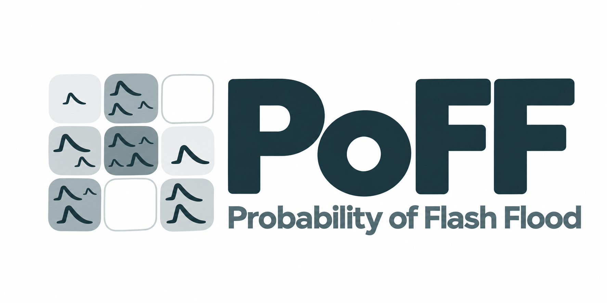

Probability of flash flood occurrence
Natural Earth
JanAprJulOctDec
Paper’s discrete intervals
01357102550100
Outside archive coverageWhite: below 1% · ocean: no data
Location profile
No archive coverage at this location. Choose a point within the Iberian domain.
Year mean probability
Highest daily probability
Select a day to update the map and media search.Explore this date ↗
Monthly patterns & anomalies
1991–2020 climatology
Monthly values and data coverage
| Month | Valid days | Mean (%) | Climatology (%) | Anomaly (pp) | Peak (%) | Share (%) |
|---|
Model skill & data quality
Evidence from the paper
Read the paper ↗Selected data
Coverage and reference periods describe the loaded archive. The paper provides the verification evidence; location-specific verification curves are not yet available.
Explore possible events
Search Google for media reports ↗
Media search provides context; a report or its absence does not confirm model performance. Results depend on language and reporting coverage.
Exposure layers
Exposure describes what is present; occurrence probability does not specify inundation or losses. These context layers belong to the demonstration dataset.